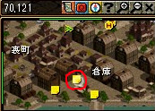
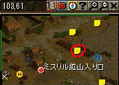
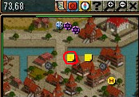
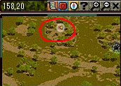
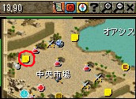

| Lv | クエスト名 | 受諾可能Lv | 称号効果 | 開始NPC | NPC座標 | 備考 |
|---|---|---|---|---|---|---|
| チャーム１ | 話術の魅力 | 1 | NPCアイテム購入価格 0.5％割引 |
コスティニ | 港町ブリッジヘッド （113,71） |
・カリスマ１００以上あれば話すだけでUP ・ない場合はすぐそばのロマと簡単な問答をしてUP |
| チャーム２ | もう一度、航海に！ | 40 | NPCアイテム購入価格 1.0％割引 |
マティアス | 港町シュトラセラト （69,120） |
|
| チャーム３ | 交渉の技術 | 80 | NPCアイテム購入価格 1.5％割引 |
鉱夫オブレーン | 鉱山町ハノブ （103,61） |
|
| チャーム４ | 彼女に告白を！ | 120 | NPCアイテム購入価格 2.0％割引 |
アレフ | 新興都市ビガプール （73,68） |
根性なしのアレフ君はセレネに告白できるのか？ |
| チャーム５ | 優良顧客の管理 | 160 | NPCアイテム購入価格 2.5％割引 |
カリファー | オアシス都市アリアン （13,91） |
| NPC | クエ内容 | MAP/座標 | 備考 |
|---|---|---|---|
| コスティニ | 港町ブリッジヘッド （113,71） |
古都冒険家協会へ。 チャーム２以降も連続でやっていくなら ロビーあたりを記憶１推奨。 称号担当官（古都冒険家協会・クエスト案内にいる） １０１１１ ←最初の数字は１０なので注意！ で直通。 カリスマが１００以上あれば話すだけでUPするため、 以下は必要なし。 |
|
| ビスル出身ロマ | ビスルの行き方を聞き出す | 港町ブリッジヘッド （111,75） |
コスティニのすぐ左下にいる。 選択肢は ２１１。ほめる選択肢を選べばOK。 |
| コスティニ | 港町ブリッジヘッド （113,71） |
| NPC | クエ内容 | MAP/座標 | 備考 |
|---|---|---|---|
| マティアス | 港町シュトラセラト （69,120） |
チャーム１から続きの場合は記憶１を使って。 そうでなければ、古都冒険家協会へ。 ロビーあたりを記憶１推奨。 称号担当官（古都冒険家協会・クエスト案内にいる） １０１１１ ←最初の数字は１０なので注意！ で直通。 下の方。  |
|
| ローレンツ | もう一度船に乗れるよう説得する | 港町シュトラセラト （55,59） |
選択肢は ２１２２。 |
| ペディスン | もう一度船に乗れるよう説得する | 港町シュトラセラト （141,60） |
選択肢は ２１１２２。 |
| 船長モリソン | もう一度船に乗れるよう説得する | 港町シュトラセラト （11,15） |
選択肢は ２２２。 |
| マティアス | 港町シュトラセラト （69,120） |
| NPC | クエ内容 | MAP/座標 | 備考 |
|---|---|---|---|
| 鉱夫オブレーン | 鉱山町ハノブ （103,61） |
チャーム２から続きの場合は記憶１を使って。 そうでなければ、古都冒険家協会へ。 ロビーあたりを記憶１推奨。 称号担当官（古都冒険家協会・クエスト案内にいる） １０１１１ ←最初の数字は１０なので注意！ で直通。 一番右、ミスリル鉱山入口付近。  |
|
| バートン | 鉄鉱石を買ってくれる様説得する | 鉱山町ハノブ （107,15） |
選択肢は 全て１。 |
| カンディス | 鉄鉱石を買ってくれる様説得する | 鉱山町ハノブ （56,51） |
選択肢は 全て１。 |
| クダフ | 鉄鉱石を買ってくれる様説得する | 鉱山町ハノブ （21,78） |
選択肢は 全て１。 |
| ハイント | 鉄鉱石を買ってくれる様説得する | 鉱山町ハノブ （31,18） |
選択肢は ２１２２２１２１。 |
| 鉱夫オブレーン | 鉱山町ハノブ （103,61） |
| NPC | クエ内容 | MAP/座標 | 備考 |
|---|---|---|---|
| アレフ | 新興都市ビガプール （73,68） |
チャーム３から続きの場合は記憶１を使って。 そうでなければ、古都冒険家協会へ。 ロビーあたりを記憶１推奨。 称号担当官（古都冒険家協会・クエスト案内にいる） １０１１１ ←最初の数字は１０なので注意！ で直通。 アレフの前を記憶２推奨。 移動ポータルのすぐ近く。  |
|
| セレネ | アレフの事をどう思っているか 聞きだす |
新興都市ビガプール （72,113） |
選択肢は ２１２２１２１１１１。 |
| アレフ | 新興都市ビガプール （73,68） |
記憶２を使って。 | |
| キュクロプスを倒し、 アマリアンの花を手に入れる |
北フォーリンロード／ビガプール南部地域 （158,20）付近 |
記憶１を使って古都冒険家協会へ戻る。 ミラーテレポータ（古都冒険者協会のロビーにいる） １１１６２ 飛んですぐ右にある小さな丘の上に、キュクロプス（Lv１２０）がいる。  |
|
| アレフ | 新興都市ビガプール （73,68） |
記憶２を使って。 | |
| セレネ | アレフの代わりにセレネに告白する | 新興都市ビガプール （72,113） |
選択肢は １２１１２１１２２１１。 |
| アレフ | 新興都市ビガプール （73,68） |
記憶２を使って。 |
| NPC | クエ内容 | MAP/座標 | 備考 |
|---|---|---|---|
| カリファー | オアシス都市アリアン （13,91） |
チャーム４から続きの場合は記憶１を使って。 そうでなければ、古都冒険家協会へ。 ロビーあたりを記憶１推奨。 称号担当官（古都冒険家協会・クエスト案内にいる） １０１１１ ←最初の数字は１０なので注意！ で直通。 カリファーの前を記憶２推奨。 一番左の方。  |
|
| シャリハーン | 感謝の気持ちを伝えプレゼントを渡す | オアシス都市アリアン （127,39） |
選択肢は ２１２２２１。 |
| アーモン | 感謝の気持ちを伝えプレゼントを渡す | オアシス都市アリアン （81,40） |
選択肢は １１１２１１。 |
| カンバード | 感謝の気持ちを伝えプレゼントを渡す | オアシス都市アリアン （90,49） |
選択肢は １２２２１１２１１。 |
| カリファー | オアシス都市アリアン （13,91） |
記憶２を使って。 | |
| アーシャル | 感謝の気持ちを伝えプレゼントを渡す | 砂漠村リンケン （62,28） |
記憶１を使って古都冒険家協会へ戻る。 一般クエスト担当（古都冒険家協会・クエスト案内にいる） １１３４１（補給品輸送） １１９４１（未完成の作品） １１３３１（中途半端な探検家） のいずれかで。 選択肢は ２１１１２２１。 |
| カリファー | オアシス都市アリアン （13,91） |
記憶２を使って。 |